10000个临时发往武汉的口罩
原文链接 备份链接 几位口罩行业的从业者，都是在大量微信、电话疯狂轰炸的间歇，接受我们采访的。所有人的语速都异常急促——在过去的一周时间内，他们接过工信部、各地应急办、市级政府的电话；也接过各省医院、药店、大小代理商的电话；还有从未打过交 …

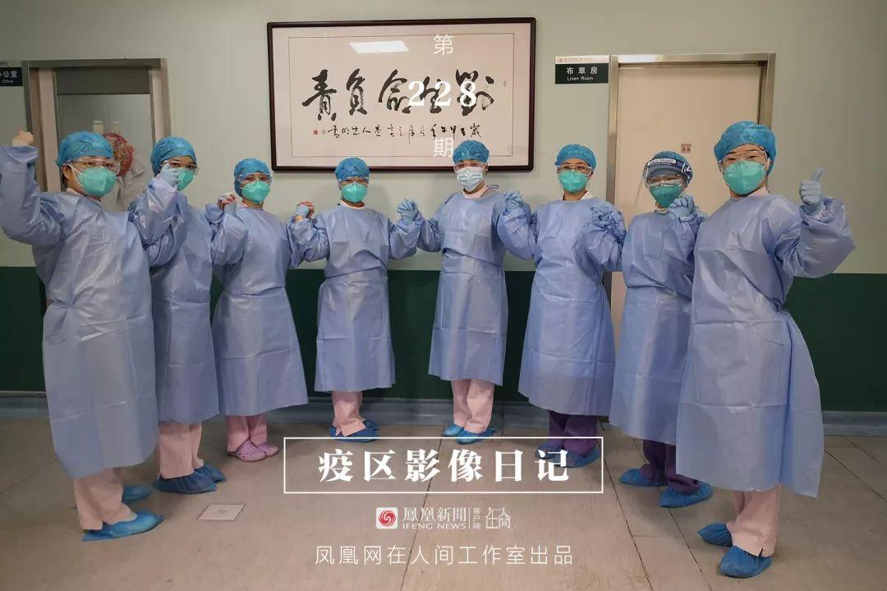
1⁄10
2020年1月25日，农历大年初一
来信：@徐大夫
坐标：武汉某心内科重症监护室
我们科室新年第一天上班的合照。
大家一起努力！
2⁄10
2020年1月25日
来信：@双十一张友文
坐标：武汉
一觉醒来，发现没有染上新型肺炎，幸福地笑了。现在这种恐怖的东西搞得人心惶惶。新年（正月初一）来了，天色也亮了，自以为勇敢的“双十一张友文”也不敢外出活动了。据说空气中都含有传染病毒。“活着就有春天”，何况春天已经不远，多活几天才是真理！
经我观察并总结，这个年没有往年欣喜，往年抢红包的多，谈“春晚”的多。如今，更多的是关心疫情，有调侃，更多的是担心……在这个关键时刻，大家都珍惜生命。我们这儿，从昨晚开始招募志愿者，武汉全市紧急征集6000台出租车，为居民出行提供免费服务。今天新闻说从明日零时起，武汉中心城区机动车禁止通行，看来，口子越收越紧了，无他，就是不让人员流动。
3⁄10
“在除夕夜崩溃大哭”
2020年1月25日，农历大年初一
来信：@Wave
坐标：湖北咸宁
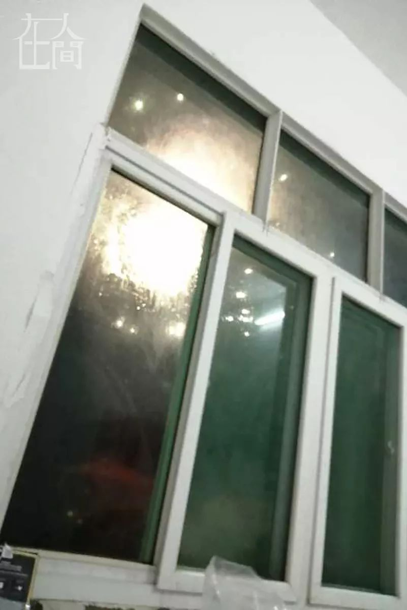
在封城的前一天，我们全家从武汉赶回了两个小时车程外的农村老家。直到在关卡被量体温，妈妈都还是不愿意相信疫情的严重程度。
今年是我在武汉住的第十年，我谈不上多喜欢这座城市，但是看到新闻上熟悉的街道空无一人，认识的老师朋友在朋友圈、空间为医院转发募集物资的动态，我还是茫然了。我姐姐是医学院学生，很早就提醒我们戴口罩，说在医院的师兄和其他医护人员被感染了。那个时候新闻还提的是有限人传人，那个时候我上街买水果戴口罩看起来还很另类。
封城来得太快，然后跟着是公共交通、高速……直到湖北省内其他城市的封城。后来，老家也被封了，我和家人都在家隔离没敢出门，我们从武汉回来的都被村里登记了。在家待着刷动态，在除夕夜崩溃大哭……没有办法想象武汉医院缺口罩防护服的医护人员，还有没有床位的病人及家属的心态。身边有朋友的朋友确诊没有床位，突然觉得就像世界末日来临一样。我可以忍受封城，可以忍受打开微博随处可见的地域黑……但是我不能忍受一线医护人员缺乏基本的防护物资甚至消毒水。除夕夜凌晨大家还在转发湖北全省各大医院的募集物资信息，外面响了礼炮，没有任何迎接新年的快乐，听说要延迟开学，封城要多久呢？可是我的一切几乎都在武汉，还是要活着回去的啊，到底什么时候能回去呢？
4⁄10
“……或许我还是跑得最快的那个”
2020年1月25日，农历大年初一
来信：@颜溪蕊
坐标：江苏
我叫颜溪蕊，一个土生土长的江苏人，大概从1月20日到现在，我几乎每天都会浏览关于疫情的网页，一来是看看此刻为止确诊（疑似）感染的人数，二来主要是看看江苏感染的情况。其实心里早有预感，只是一边浏览一边数着江苏沦陷的倒计时。对着日益增长的数字，内心也是忐忑的，相比于武汉，却多了一份小庆幸，尽管说着这话似乎有些不要脸，可这确实是我内心最真实的感受。
23日看到武汉封城的新闻，偶然间又在朋友圈刷到有些武汉人举家连夜出逃、20多万武汉移动用户到访江苏地区……有丝害怕、担心这些人。昨日上午，去加油站排队等候时，也恰好和父母谈论此话题，“不得了了，现在已经20多万武汉人逃到我们江苏来了，南京最多，其他地方也有，咱们南通都已经有7000多人来了。他们怎么这个样子的！”老爸倒是淡定得很，或许是吃得盐多了吧！“这有什么稀奇的，正常啊。如果你是武汉人，那么多人感染了，你不害怕个？跑得快快快啊！”无语凝噎，想想也是，换位思考，逃离的多是带着一家几口，且身体健康又害怕被感染的人。如果是我，管他什么故乡情怀、誓死坚守，小命要紧，我也一定是拎拎行李，撒腿就逃了，或许还是跑得最快的那个。
5⁄10
“遗弃感”
2020年1月25日，农历大年初一
来信：@Amy
坐标：湖北孝感
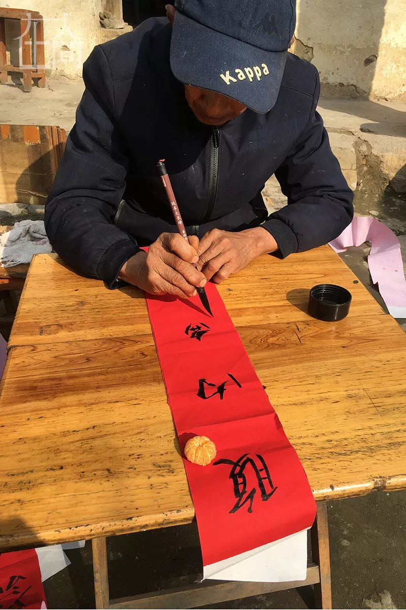
早上起床时听哥哥说武汉从23日10点开始封城了，虽处在疫区的小乡村，乍一听还是没什么感觉。直至今天打开12306网站、携程网看到所有从武汉出发的票全部停运，想到年后的工作，想到每个月的房贷心里才开始有些隐隐的担心和恐慌。特别是自己已经预订了初三的返程票，可从目前封城的情况来看，初三能出行己经是不可能的事情了，心里才真正感觉一丝丝的担心，这种担心更多的是来源于对未知的不可控性和一种遗弃感！
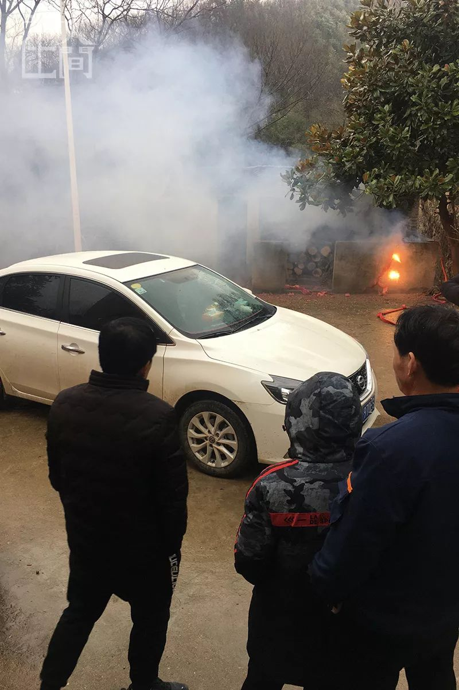
离开家乡二十多年，因为年迈的父母及对春节全家团圆的执念，每年的春节我们三兄妹都会从不同的城市回来相聚。就是为了一起陪父母吃个团圆饭，一起和父母聊聊天，一起和父母包包饺子。故乡虽在疫区，但离武汉市中心还有三个小时的车程，乡村里一切都很安静，很和谐，没有感染者，没有恐慌，没有口罩。但从左邻右舍的交谈中也会了解到村里人都知道不能吃野味，不能去人群聚众的地方，尽量不要串门，春节期间相互拜年的习俗今年可以尽量减免！
可随着新闻及各平台各种消息、视频的发布，从大年三十到正月初一，公共区域、路上基本上空无一人。早上起床时还听到大嫂说超市的大米己经被采购空了，虽说家里的生活物资可以保障半个月左右正常的生活，但也能明显感受到家人丝丝的担心和焦虑。客厅、洗手间、厨房、卧室开始不停的清理、整理，保持家里通风状态，不停地烧开水，家人开始不断地喝水，不停地关注对方的健康状况，稍有不注意打一个喷嚏就会引起家人的关注。

最主要的焦虑还是来源于需要生存，需要外出工作，返程期限却遥遥无期。且各大高速路口、省道、国道、高铁、省运、客运、航班全都停止营运，在与湖北交界的省道、高速路口都已被人为堵住。这时，会在心里真正感觉到像被人遗弃一样，湖北己与世隔绝，武汉己经成为一座孤城，故乡成了安放灵魂最后的栖息地！
还有来自于心理上的压力，需要外出工作的湖北人，也会在心里慢慢感觉到自己可能会被其他人害怕，从心理、生理上都会有一种距离感。虽能理解，但更多的需要做自我心理建设，照顾好自己，不给他人、公司、社会、国家增添任何负担，也期待外界能多给来自于疫区的湖北人心理上更大的支持与鼓励，他们也是最大的受害者！
作为身在湖北疫区的一名普通人，我是相信国家，相信人心所向！2003年的非典，北京没被放弃，2008年的冰灾孤城湖南郴州没被放弃，2008年的殇城四川汶川没被放弃，2020的武汉一样不会被放弃！我相信敢为天下人先的湖北人民一定能渡过难关，顽强抗战疫情，还世界一个健康的大武汉！
6⁄10
“儿子仿佛是家里的老妈子”
2020年1月24日，农历大年三十
来信：@陈汉武
坐标：武汉
记得在冷兵器时代，古人练练射箭就是在十米开外，用细绳吊上一枚铜钱，每天盯着铜钱看，铜钱的方孔每天被放大，于是箭就能射进方孔里，其意思就是当人们盯着一件事物看的时候，这个事物是会被放大的。问题是一样，疫情也一样，要学会走进去，还有走出来，才能相对客观地看待或还原事物的真实。我也看到坊间流传的各种预防的方法，于是有专家出来辟谣，说这也不行那也不行。你管它行不行呢，他们的心理安慰了，内心强大了，对付病毒就更有信心了。人克服了三个恐惧就会内心强大，就是要克服对疾病的恐惧，对死亡的恐惧，对未来未知事物的恐惧。于是我在有9家朋友的“执子之手与子偕老”微信群里发起游戏通知，规则是这样的，每人发100元16个红包，最后谁抢得最多，在武汉解禁的那天谁请客。这个倡议得到了大家的响应，估计今天抢红包都会热闹半天。
夫人已经用4个鸡蛋和几根虫草蒸好了鸡蛋羹，我又下了碗清汤面便是中不中早不早的一餐了。夫人把原来家里做艾灸的艾棒拿出来点燃，权当熏艾香了，就是烟有点大，味道比较呛鼻，时间长点还辣眼睛。这时又接到我定了年饭餐馆的电话问年饭还吃吗，当然取消，随后通知家人年饭取消。我又征求意见要不到家里来吃，哥哥姐姐们都建议不吃年饭了，各待各家，各找各妈，可惜我们家早就没妈了。只能求妈在天之灵保佑我们。
上网浏览了一番，武汉蔡甸的“小汤山”（火神山医院）开建，北京，广东，上海等地医疗队驰援，最值得关注的还是有位德国的白求恩大夫带着他研究的病毒试剂赶往武汉，但愿这条是真的……
除夕，儿子发来了视频，儿媳妇在洗碗，应该是才吃过饭，儿子不断在叮嘱这和那，仿佛他是家里的老妈子。最后我们一家四口在视频中都竖起大拇指，你若安好便是晴天。
7⁄10
“对于学生而言，预防新型冠状病毒的最好办法就是……”
2020年1月25日
来信：@彤儿
坐标：上海
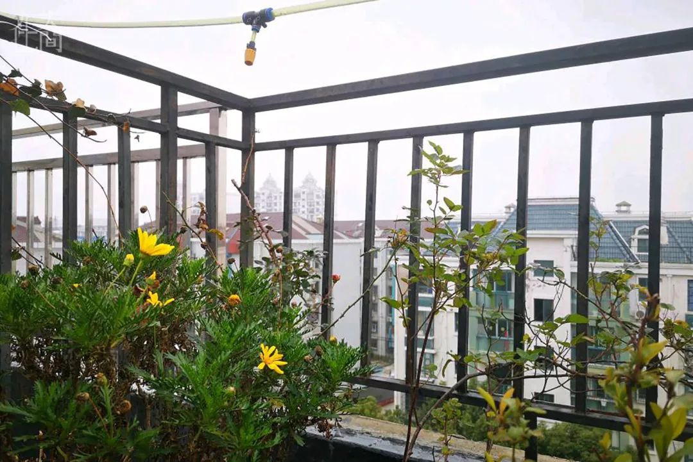
本人高中生，武汉肺炎得到大范围普及之前，学校刚刚组织寒假活动，在人民公园对面看电影，又和班级同学参观了档案馆，在书城晃悠了一圈。
挺正常的假期开端。
然后在家咸鱼、出门补课的日子过了没两天，就刷到了新闻。家里面翻了翻，找到了去年为H1N1屯的N95口罩，虽没剩几个，但也算挺幸运的。在奶奶家提前吃年夜饭，听医院里做护士的亲戚普及了一下注意事项，就回家了。我空间里朋友圈里感觉并不恐慌，大多数是科普推文，祈福，还有给自己和爱豆P口罩的。
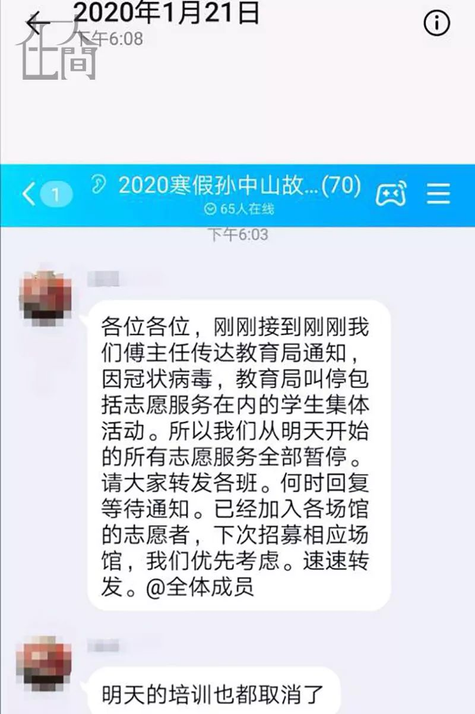
我唯一比较烦恼的是报名了志愿者，在孙中山故居，客流量较大。不过下午在愁，晚上群里就发了通知：市教委反应迅速，叫停了假期所有包括志愿者服务在内的学生集体活动。于是我轻松了，把我十几页要背的讲解稿一扔，写写数学刷刷手机，和老师拜年同学聊天，在“新年快乐！”之后加一句“出门记得戴口罩”，对方回一句“你也注意安全”。
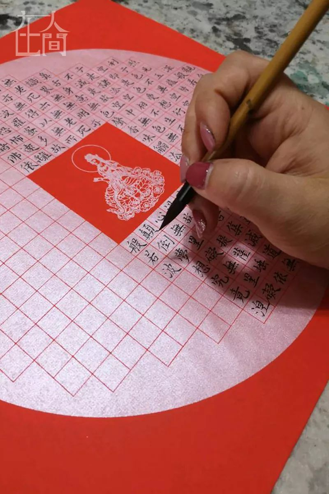
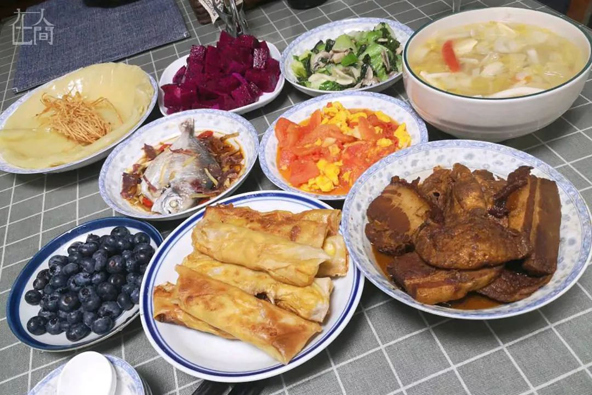
年夜饭原定回外婆家，不过现在商量后还是待在家里，帮着爸妈打打下手，小家过年三十，也挺好的。
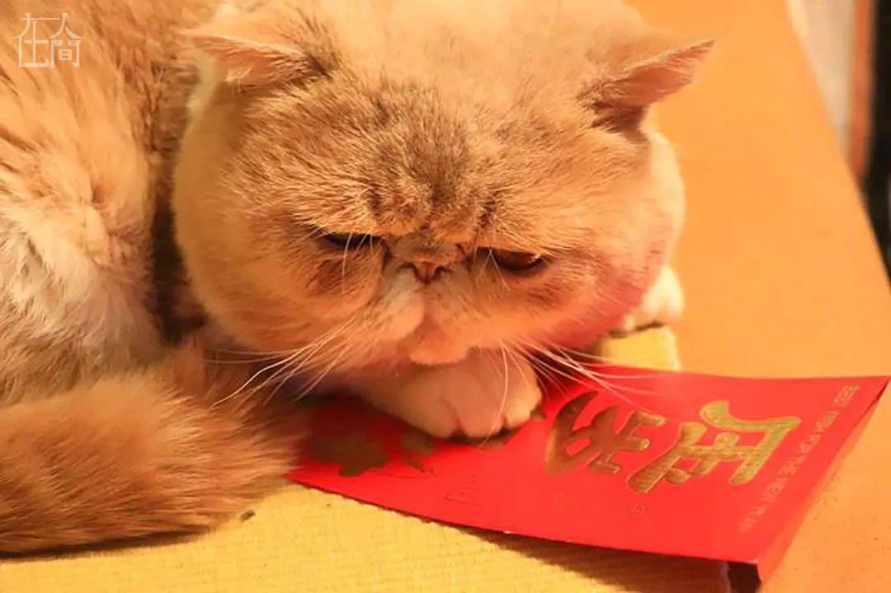
有看见#逃离武汉#的Tag，确实有一部分的武汉人很慌，觉得上海医疗条件好，往上海跑，但说真的，全国最好的专家都往武汉去呢，您都发热了还拼命离开武汉做甚啊？不过，更多的武汉人有战胜疫情的勇气，在封城之际留在武汉，我想他们也许会有恐慌，但更想着保护自己也是保护他人。相信武汉，也相信中国，经过非典一役，中国政府应对疫情已经有足够的经验和能力。武汉加油！
有重视，但也没有恐慌。对于学生而言，“预防新型冠状病毒的最好办法就是——在家待着写作业”。
8⁄10
“作为奔赴在一线的社区工作人员”
2020年1月25日
来信：@羊草娃娃
坐标：福建福州
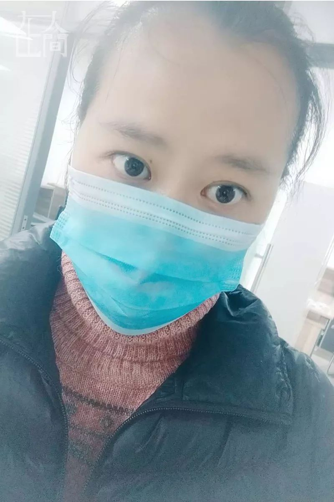
今天早晨起来连续不停，打个十个喷嚏，出现轻微发冷以及乏力症状，考虑到我近期对武汉祖籍人员的摸底以及和各种垃圾、各种家禽周旋，作为奔赴在一线的社区工作人员，极具感染风险性，吓得我喝了一壶热水，好在慢慢好了。
今天晚上继续奋战，凌晨收工，加油！
都说不是盛世太平，是因为有人为你负重前行。医护人员、记者、社区大妈以及防疫站工作者、卫生工……共同守护福州城的安宁，这些不被关注、不被报道的群体，正在为这座城市负重前行。从内心说，我也是家人的女儿，是家人的外孙女，是朋友的小可爱，但因为工作的关系，不得不忍住眼泪，冒着生命危险，逐一排查。有时候想想自己都觉得，真的是平凡而伟大，手无寸铁的娘子军，没有军人的刚毅，没有医护人员的专业，我们用自己仅有一次的生命为老百姓负重前行。十二年来，连续奋战一线，十二年来，没有一个大年三十和家人度过。十二年来，每一个大年夜，看着万家灯火，我们在工作，我们在防御火灾，我们在守护着辖区的每一扇窗门，我们是胆小的，恐惧的，疲惫的，平凡的，也是伟大的。想想我十二年的付出，我流下了热泪，我把青春奉献给了这座城，我把血泪贡献给辖区，我把仅有一次的人生交付给了这样一个平凡的，不被世人铭记的工作。
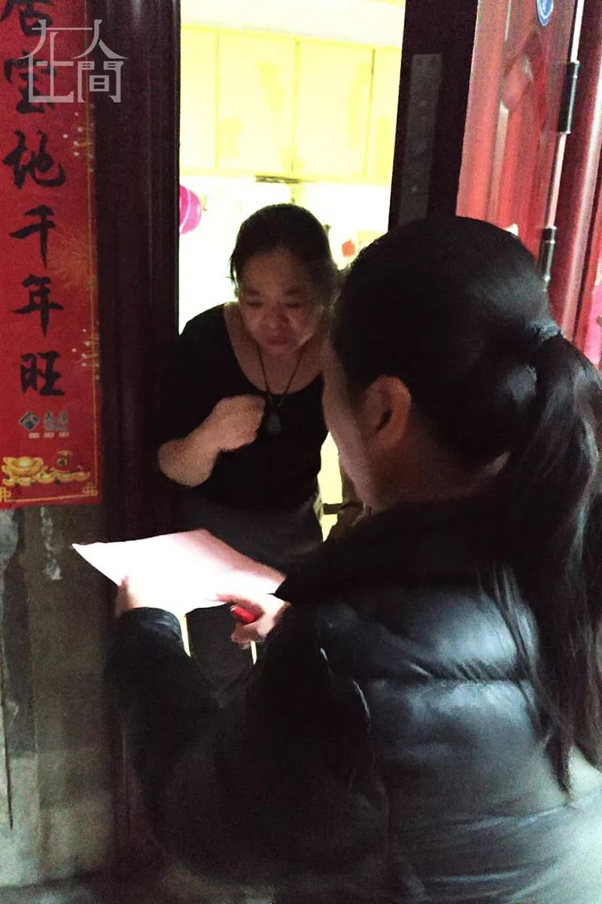
图片是我本人，在发宣传单。我的工作是福建省福州市某街道的社区工作人员，昨天入户被人骂出来，因为出现不配合的情况，武汉返回人员对我们的摸排很反感。
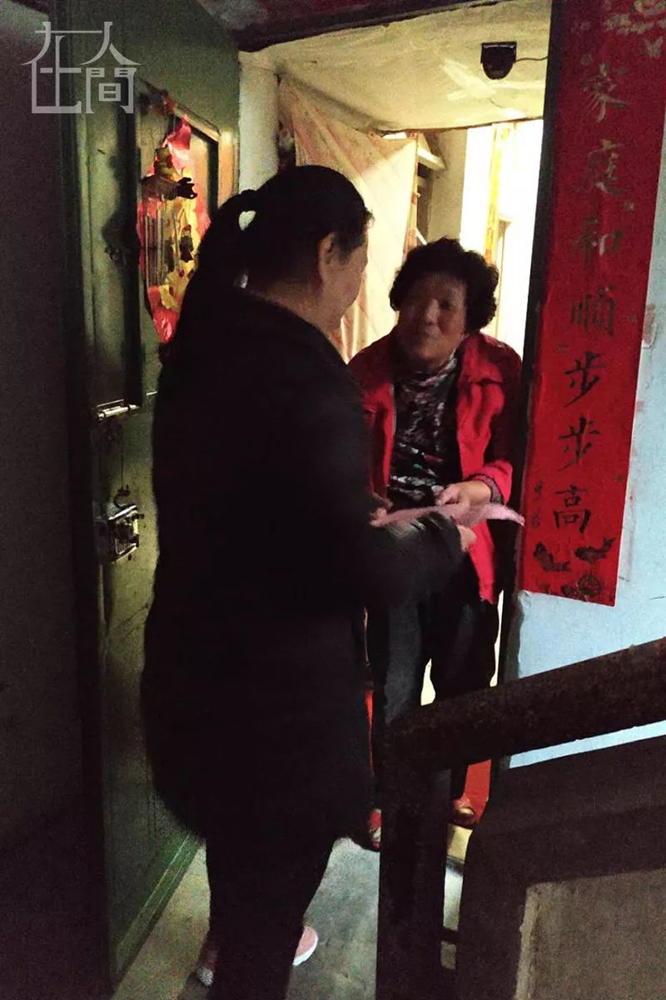
武汉毫无预警被封城，人心惶惶，城里的人带着不同的情绪，过着不普通的新年，注定很难忘。根据我走访的武汉原住民回忆，整座城市几乎是在某个时间，突如其来对外隔绝，孤立无援的感觉，但又不得不接受这样的决定。交通陷入瘫痪，世人戴起口罩，商铺显得很冷清，路上行人匆匆过，风吹过，大红灯笼晃来晃去的，好像一场微电影拉开了序幕。
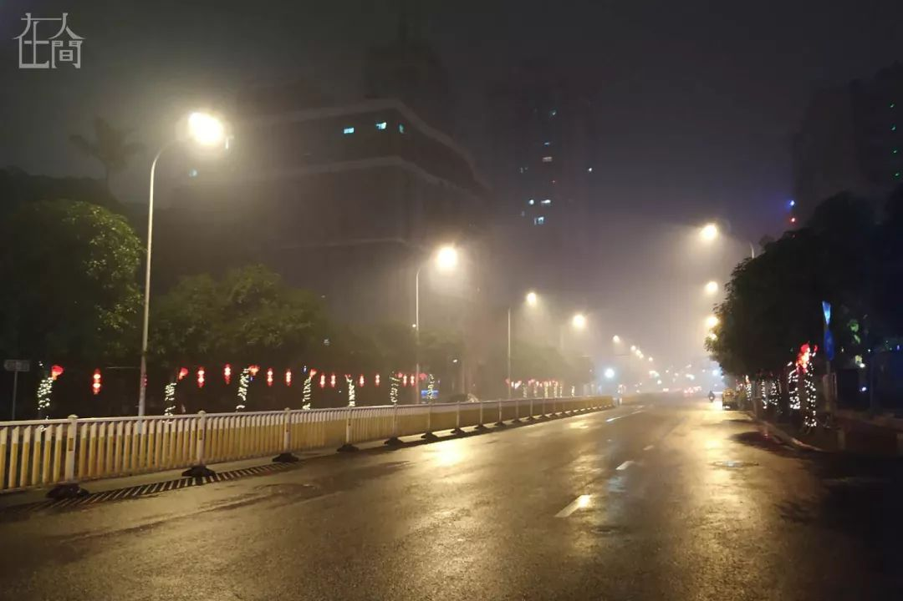
9⁄10
“那时候，我的老公就安全了”
来信：@风铃
坐标：云南曲靖
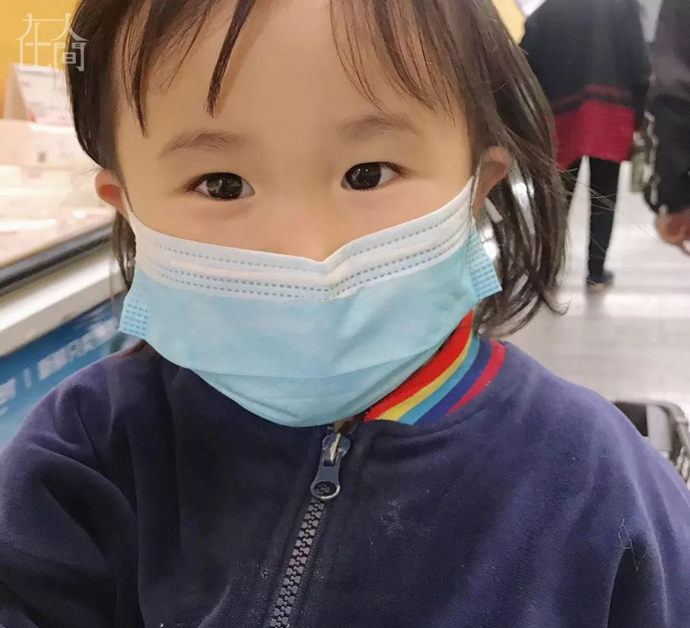
1月22日，星期三，上午10:09分，手机一直在疯狂震动，休息时发现老公一直在打我电话，赶紧回拨，秒接，原来他一直在握着手机在等我回应，电话一接通就是“赶快去买口罩，昆明确诊一例新肺炎，赶快赶快……”。一个月前就看过相关的新闻，觉得新肺炎离我们很远，我们从不吃野味，身边的亲人朋友也都没有此“特别的爱好”，我觉得老公这次可能有些过于激动，学医的人是否会更怕病毒？经历过非典的90后，“懒于”去未雨绸缪，非典来的时候我们是初中生，不怕虎的年纪，而且非典并没到云南这样的偏远地区，响应国家号召，学校安排喝中药、板蓝根，一天四次消毒，做全了预防工作，可是非典走了，好似都没有晲我们一眼。事实证明我的自我保护意识和能力都太弱了，原以为安静平凡的生活会一直持续，原以为我们不去吃野生动物，遵纪守法就会平平安安，没想到这个世界变小以后，在“新肺炎”的关照下，我被迫感受到了“人类命运共同体”。
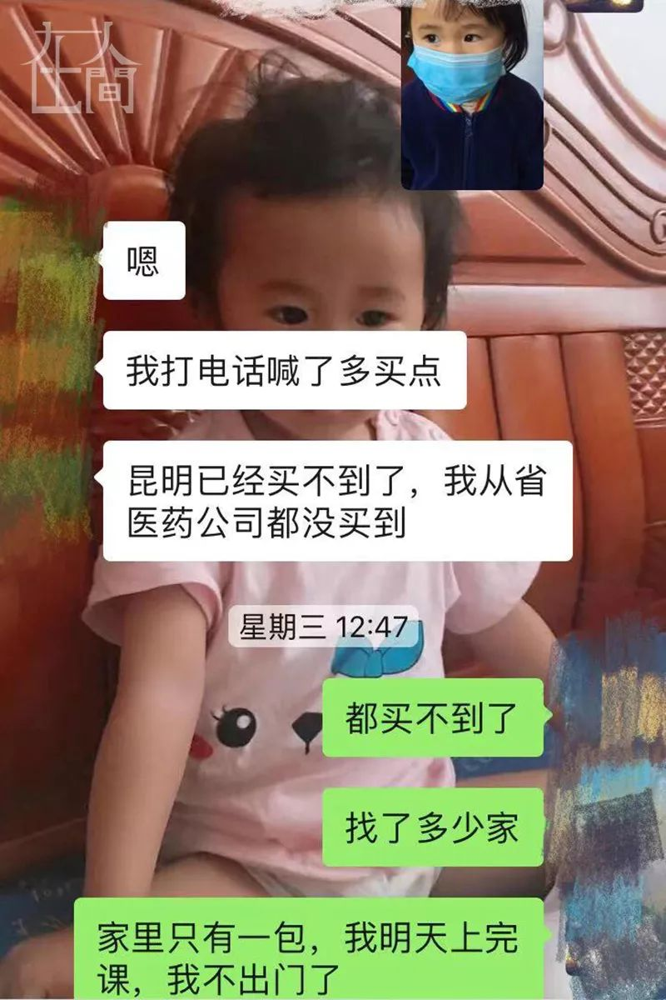
下课后，一路狂奔到药店，第一家、第二家……直到整条街的药店都问遍了，答案都是“没有，早就没货了”，“快过年了，不知道能否调回来”，内心有一丝慌乱，在大街上看到人，都自觉补脑丧尸的模样，阳光很烈，心里却不暖。家里还有老人和孩子，还有在医疗一线的老公，还有我的学生们。内心在煎熬中等了10分钟，母亲发来一张孩子带着口罩的照片，眼泪出来了，在疾病面前我们很无力，连自己都保障不了，如何守护我的家人们？老公在部队后勤医疗单位，他把家交给我，于私我是他的妻，要守护好我们的家。于公为国，我要做他的后方。思绪万千时，老公打来电话来说云南省医药公司的口罩断货了，短短两分钟内。
1月23日，本应该热闹的大街空空荡荡，连超市里人都少很多，过年的味道似乎都被赶跑了，我们笼罩在病毒之下，它们正在攻击人类的防线，它们很多内应比如“自私”、“愚昧”、“风俗”……云南省卫生健康委员办公室发出全省卫生健康系统取消2020年春节放假的通知。本计划休假回家过年的老公得坚守岗位，好多年没有一起吃年夜饭，以前难过半天就接受了，这次格外难受。我的人为什么要替那些“蠢人、蠢事”善后，我愿意陪老公守护安稳过日子的群众，却不想我们这次是为某部分人的私欲买单。可抱怨解决不了新肺炎，多年军嫂的觉悟和对爱人的担心纠缠在一起。每天都在关注新肺炎的消息，看到“小汤山”的建设、看到大家在捐赠物资，我戏谑地对老公说“我想把你捐出去支援武汉”，老公说“我们现在就在一线，昆明这边医院还有很多不确定的因素，我们随时待命”。“一线”二字，他第一次说。视频中我们久久相视，沉默。最后，我们不约而同地含着泪微笑，这是我第一次感到做军人妻子，不仅有家的责任，更有国的力量。

1月25日，大年初一，好多年没有下雪的曲靖，竟银装素裹，瑞雪的到来缓解了一丝紧张，我们都在期待这雪能够带走病魔，人们一边肆无忌惮地侵略自然，又祈祷自然的力量解决人因为贪婪无知所犯下的罪恶。下午，新闻报道曲靖有一例确诊了，新肺炎从武汉偷袭到了云南，很快。这一天反复看新闻，反复叮嘱家人，过年不拜年，不串门，勤洗手，戴口罩。我们可能要被自己建的城围住了，我希望我们能尽快战胜新肺炎，无处不在的危机还有不断出现的病例，以及不断被列上版的新地名，如梦一般，睁眼即逝，那时候，我的老公就安全了，孩子的爸爸就可以回家。这个“年”，真如野兽般，最终会被我们赶走，不是吗？
10⁄10
“再不要说多难兴邦”
2020年1月24日，农历大年三十
来信：@芳华
坐标：北京

短短几日，疫情的发展，远远超乎我们最初的想象。连一直望眼欲穿盼我归来的老父亲，早晨都打来电话，嘱咐我要不春节就别回了，过了这段时间再说，起码避开春运高峰期的汹涌人流。朋友圈里、各种群里刷屏的、亲友之间传递的，全是最新消息和数据，紧张的气氛在蔓延，人人自危，大家都开始囤积食物和消毒用品，减少出门，取消了各种行程，连一年一度的北京庙会都停办，故宫也宣布闭馆……
如果不是因为这样的氛围，我不会想起静静躺在柜里的这本书——《历史的细节》。
2003年那个春天，非典肆虐，北京和广州是重灾区。
17年前的场景，至今还记忆犹新，口罩脱销、暴涨，醋、84消毒水、洗手液……全面告急，人心惶惶。那段时间，大众的卫生意识空前高涨，每天洗手若干次，随身携带消毒纸巾，随地吐痰的行为绝迹，公共场合你若咳嗽一声，所有人会立即弹开三米远，看你的目光如全民公敌。
记得那年五一期间偶尔上街，路上空空荡荡，人少，车少，再不见平时车水马龙的常态。学校停课，单位放假，公共文化设施关闭，整个城市完全失去了平时活力，甚至一度影响到了北京的房价。
那段日子，多家媒体发起征文，非典得到控制之后，征文被整编成书，就是这本《历史的细节》，我的两篇文都收录在内。
非典发生的2003年，留下多少可歌可泣的故事，多少前线白衣逆行者的勇敢身影，也让多少患者生活在各种后遗症中，后续人生受到极大影响。这是一个民族的集体记忆。
但人们总是健忘的，好了伤疤忘了疼，时过就境迁。各种野味市场依然存在，野生动物还是会摆上某些人的餐桌。17年白驹过隙，今日的场景何其熟悉，一切仿佛在重演，只不过这次疾疫的来临，伴随着春运和返程两个高峰，更增加了不可控性。一切正在发生，我们正在见证，未来，当局势得到控制，我们回顾这一次疫情，又会带来怎样的历史细节？我们的公众记忆，又能维持多久？
再不要说多难兴邦，其实这样大规模的病毒爆发，也许我们能在源头早早避免，太多的地方需要反思和问责，起码能够防止疫情这样迅速地扩张蔓延。
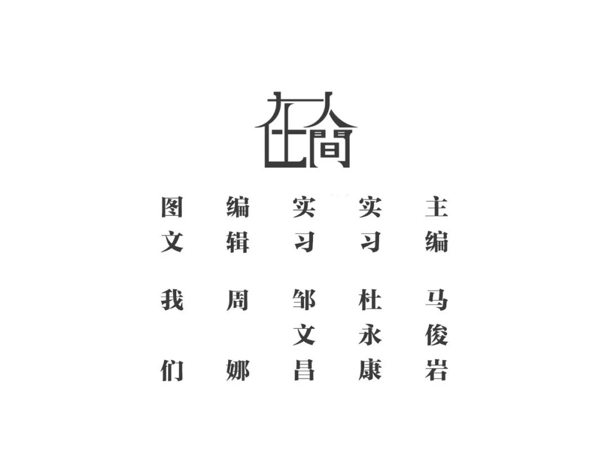


新型肺炎疫情牵动人心，
《在人间》现面向全国网友征稿：
疫区影像日记
如果你身处疫区
请你用照片（视频）和文字记录
你所听闻和见到的一切
照片不少于3张
文字不少于300字
投稿方式：微信联系人间君（zairenjianliving）

文章已于修改
原文链接 备份链接 几位口罩行业的从业者，都是在大量微信、电话疯狂轰炸的间歇，接受我们采访的。所有人的语速都异常急促——在过去的一周时间内，他们接过工信部、各地应急办、市级政府的电话；也接过各省医院、药店、大小代理商的电话；还有从未打过交 …
原文链接 备份链接 大家好，我是田静。 这几天因为新型冠状肺炎病毒，我恶补了一些相关书籍，再看网上真假难辨的信息，觉得阿尔贝‧加缪的《鼠疫》中说得很对：“我们每个人心里都有瘟疫，没有一个人，这世界上没有一个人是免除得了的。能够对抗瘟疫的， …
原文链接 备份链接 🎧 点击上方图片，跳转「故事FM」小程序，收听真人讲述。记得添加「我的小程序」，一键收听全部故事哟！ 本来在春节前的最后一期节目里，我预告说 故事FM 会放假一周，节后回来再见。 但是这个春节啊，我们团队都无心过年，大 …
原文链接 备份链接 以下文章来源于地球青年图鉴 ，作者地青 “此刻的中国版图中，武汉好像是一座孤城，但实际上在这座孤城之内还有无数个孤城，有成千上万个原驻家庭把自己锁在家里，他们表面上安静祥和，心头却有一根线紧绷着。”受访者张恒写道。 …
原文链接 备份链接 本视频为今年的年三十，武汉父母与身在外地的孩子 隔空互送新年祝福 年夜饭，是中国人最看重的家庭宴会。1月24日，武汉封城第二天，年三十，有23个武汉人给我们分享了他们的年夜饭。 @王启明： 今天是武汉封城的第二天，也是 …